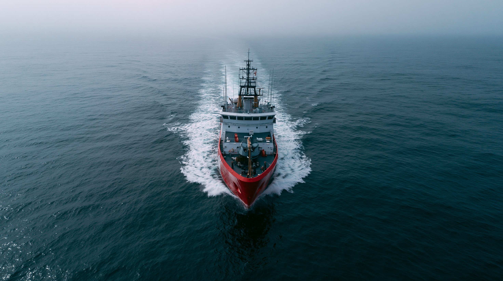

01「新常態」とは何か — 定義と構造
台湾を取り巻く軍事的圧力は、2026年に入って「量」より「質」が変わった。 中国軍機の防空識別圏（ADIZ）侵入回数は2024年5月の頼清徳政権発足後に月300回を超えたが、 2026年初頭から月200回を下回って推移している。 この数字だけ見ると「圧力が和らいだ」と読めるが、そう単純ではない。
中国が選んでいるのは、量的なエスカレーションから「常態化＋法律化」への質的転換だ。 毎日少しずつ軍艦や海警船が台湾周辺を行き来することで、国際社会の「異常事態センサー」を 徐々に麻痺させる。そして「武力」と見なされにくい海警局（沿岸警備機関）を前面に押し出すことで、 国際法上の「武力攻撃」の定義そのものを曖昧にしていく——これが台湾海峡の「新常態」の実態だ。
中国にとって、台湾に対して取れる選択肢は大きく3つある。 それぞれのコストとリスクを比較すると、なぜ「検疫」が最も合理的な選択なのかが見えてくる。

02 タイムライン — 「火を使わない包囲」の形成史
台湾海峡危機 — 最後の「旧型」危機
中国が台湾総統選に圧力をかけるためミサイル演習を実施。 アメリカは空母2隻を台湾近海に派遣し、中国は演習を中止した。 この「露骨な軍事圧力 → アメリカが介入 → 中国が引く」という構図が、 以後30年で大きく変わっていく。
ペロシ訪台と封鎖演習 — 「新型」圧力の登場
アメリカ連邦議会議長ペロシの台湾訪問に反発し、中国は台湾を完全に取り囲む 大規模軍事演習「東部戦区演習」を実施。基隆・高雄の主要港を含む6エリアを封鎖した。 この演習は「封鎖の予行演習」と広く分析され、以後の中国戦略の原型となった。
頼清徳政権発足 — ADIZ侵入が月300回を超える
中国が「台湾独立」路線とみなす頼清徳が総統に就任すると、 中国軍機のADIZ侵入が急増。月300回を超え、「新常態」の幕が開いた。 だが当時の「量的エスカレーション」は、翌年から「質的転換」へと向かう。
「正義の使命2025」演習 — 海警局が主役へ
人民解放軍東部戦区が台湾を取り囲む大規模演習を実施。 注目すべきは、海警局が演習の主体として前面に立ったことだ。 軍艦ではなく「法執行機関」を使うことで、「武力演習」ではなく 「法執行訓練」という体裁を整え、国際社会の批判を回避しやすくした。
侵入回数が減少 — 「量から質へ」の転換完了
ADIZ侵入回数が月200回未満へと減少。「圧力が和らいだ」という見方もあるが、 実際は別の動きが進んでいる——人民解放軍の「戦闘即応パトロール」の頻度は増加し、 焦点は台湾海峡から東シナ海・南シナ海へと広がりつつある。 数字が減った裏で、「検疫」型の恒常的包囲が深化している。
03 5つの視点
| 勢力 | 基本スタンス | 最大の懸念 | 現在の動き |
|---|---|---|---|
| 中国 | 統一は歴史の必然 | 台湾の独立宣言・アメリカの介入 | 海警局主導の検疫型包囲 |
| 台湾 | 現状維持・民主主義の防衛 | アメリカの支援が続くか | 非対称防衛・国産兵器増産 |
| アメリカ | 戦略的曖昧さ（変質中） | 中国によるTSMC支配 | 武器支援最大化・介入は不明確 |
| 日本 | 現状維持・台湾有事は日本有事 | 南西諸島が戦場になること | 防衛費倍増・反撃能力取得 |
| ASEAN | 巻き込まれ回避 | 経済と安全保障の板挟み | どちらにも付かない中立外交 |
04 データ・統計
台湾ADIZ侵入回数の推移（2020〜2026）
2024年のピーク（年間3,000回超）から2026年は減少傾向。 「エスカレーションが続いている」という直感と、データは異なる動きを示す。 侵入回数の減少は「圧力の緩和」ではなく「戦略の質的転換」を意味する。 出典：AEI China & Taiwan Update、防衛研究所分析
台湾海峡の軍事バランス（主要指標）
規模の差は圧倒的だが、台湾は非対称防衛（対艦ミサイル・無人機・機雷）で 侵攻コストを引き上げることで対抗する。数で勝てなくとも「勝つのに高すぎる」 状況を作ることが目標だ。出典：U.S. DoD中国軍事力報告（2024）
05 深掘り — 「シリコンの盾」の逆説と2027問題
台湾海峡をめぐる最大の逆説は、「誰も戦争を望んでいない」のに 「戦争のリスクが高まっている」ことだ。 中国は「侵攻しない理由」を十分に持っている。 だがそれは「侵攻しない」ことを意味しない—— 戦争の閾値の下で少しずつ現状を塗り替える「火を使わない包囲」が、 今まさに台湾海峡で静かに進行している。